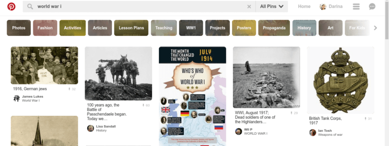

Проучване по интернет за есе, блог или маркетинг
Ако не ни се налага често да пишем по нехудожествени теми (като в училище), понякога забравяме, че се изисква намирането и осмислянето на факти, които не знаем наизуст.
Независимо дали сте се заели с писането на есе, доклад или публикация в блог, просто да пуснете условията си за търсене в Bing (ха, хванахте се- имам предвид Google естествено) не винаги е оптималният ход.
В началото може да отнеме малко повече планиране, но резултатите ще са по- качествени и дори по- бързи.
Ако имаме само бегла представа какво търсим, разбира се, най- напред може да проверим какво ни изплюва търсачката като резултат.
След като зачетем три- четири страници вече ще ни се изясни какво е общото: кои понятия се срещат най- често, важни имена и контекст.
(За да отоврите линк в отделен подраздел задръжте бутона Alt и кликнете отгоре му.)
Добавете дълбочина
Лесен начин текстът ни да не е подобен на стотиците други по същата тема са прозренията, които получаваме когато се разровим в миналото. Как се е стигнало до този феномен или събитие? Защо придобива важност (точно сега)?
Един начин да го постигнем е да погледнем линията на времето. Какъв е бил zeitgeist-а преди Първата световна война например? От какво са се вълнували? Кое за тях е било история- както построяването на пирамидите е било по- далечно за Наполеон отколото сме ние. Знаете ли, че Платон и Буда са живели по едно и също време, разликата между Покахонтас и Рене Декарт е само една година, а Одри Хепбърн и Ане Франк са връстнички. Ако става въпрос за модерно явление като изкуствен интелект- кога започват проучванията, коя е науката, която е изучавала подобни въпроси, кои са големите играчи.
В тази връзка, другият начин да открием нещо по- специфично и оригинално е като използваме ключови думи, свързани с темата. Защото обикновено се задоволяваме да прочетем единствено резултатите, които съвсем точно отговарят на очакванията ни, но ако четем вече готовото няма да ни хрумне нищо ново. Статиите за особени термини ни позволяват да видим друг ъгъл, а и тъй като за да преминат към частното първо се налага да резюмират общото- например ако се говори за Шекспир най- вероятно напред ще има бележка за елизабетинския театър, или ако се говори за клайнизъм се тръгва от фройдизма- ни помогат още в началното търсене като откояват същественото по по- всеобхватната тема, която ни интересува.
Понякога на български няма много информация за специализирани области, така че полезен трик е да преминем на друг език. Най- осъществимо става това, ако сте на страницата на Уикипедия, където може да ползвате левия панел с понякога до 50 различни езика. Отличните статии са обозначени със звезда! Дори да не владеете езика, с помощта на Google translate може да разберете най- основните положения, които да ви послужат за трамплин или както са си.
Нестандартен начин за търсене е чрез изображения- за сложни предмети всякакви визуални помагало като диаграми, илюстрации и инфографики може да са ценни. Така от преобладаващите образи може също да придобиете представа какво е най- запленяващо, интригуващо и популярно по темата.
Един от основните фактори при намирането на информация е от къде започвате.
Как да намирате достоверни източници?
Ако имате търпение и концентрация най- добрите са академичните източници. Порталът Google Scholar ви дава резултати от различни научни сайтове както и книги. Друг известен такъв портал е jstor, който събира статии от списания, първоизточници и книги; принципно голяма част от материалите са платени, но ако сте ученик или сте записани в някоя библиотека е възможно да имате достъп, така че питайте. Разбира се въпреки че е писана от доброволци wikipedia може да бъде много полезна.
Ако имате някаква идея, отидете където се събират хората, които ви интересуват- форуми, блогове или Facebook групи. Не всичко е описано достатъчно достъпно и ясно в официалните документи. А знанието на обикновени потребители може да не е записано другаде.
Не мислим за тях като такива, но сайтове като reddit, quora и pinterest служат като търсачки. На reddit всичко е подредено по нишки, на quora дори и да не намерите отговор на въпроса си може да го зададете и да ви отговори експерт или любител, а pinterest не са само красиви картинки, но също графики и връзки към статии, подредени и класифицирани.
Много добър сайт, особено ако пишете за по- приложими теми е интернет гигантът Amazon. Потърсете книга, която се занимава с проблема, който ви интересува и погледнете мненията. В коментарите си хората сами си казват какво им липсва като информация или какво не е обяснено толкова добре. Ако ви трябва идея за следващата ви публикация, ето чудесна възможност да я чуете от устата на ангажирана публика.
Ако правите проучване на пазара един от най- полезните трикове е да използвате “Инструмента за планиране на ключови думи” (Keyword Planner) в Google AdWords. Въпреки че е предназначен за маркетолози, може да ви подскаже как да развивате бизнеса и хората, до които достигате.
Как да си водим бележки
Докато работите по по- сериозна тема, ще ви се наложи да пазите източниците и идеите си.
Непосредствен вариант е да ги записвате в документа, в който пишете.
Класическото е да ползвате хартиен списък или картички с цитати, заглавия на книги или подсказки.
Също може да си направите мисловна карта- слагате темата в средата на листа и с помощта на стрелки и кутийки маркирате важните точки.
Запазете и организирайте бележките си онлайн с помощта на приложения като Evernote, Pocket или дори, ако става въпрос за много числа, дати и данни, с помощта на таблици като Excel или Google Sheets.
Леко и спорно писане!
А като свършите, вижте и съветите ми за редактиране.